Guia operacional com telas reais do sistema.
Acesso local: http://127.0.0.1:8010
Usuário inicial: admin@sistema.local
Senha inicial: Admin@123456
Este tutorial mostra o fluxo principal para usar o sistema no dia a dia de um restaurante: cadastrar cardápio e insumos, configurar fichas técnicas, abrir caixa, registrar pedidos, controlar mesas, compras, estoque e relatórios.
Use o dashboard para acompanhar pedidos do dia, pedidos do mês, lucro estimado, formas de pagamento, caixas, estoque baixo, contas vencidas, mesas ocupadas e pedidos delivery.
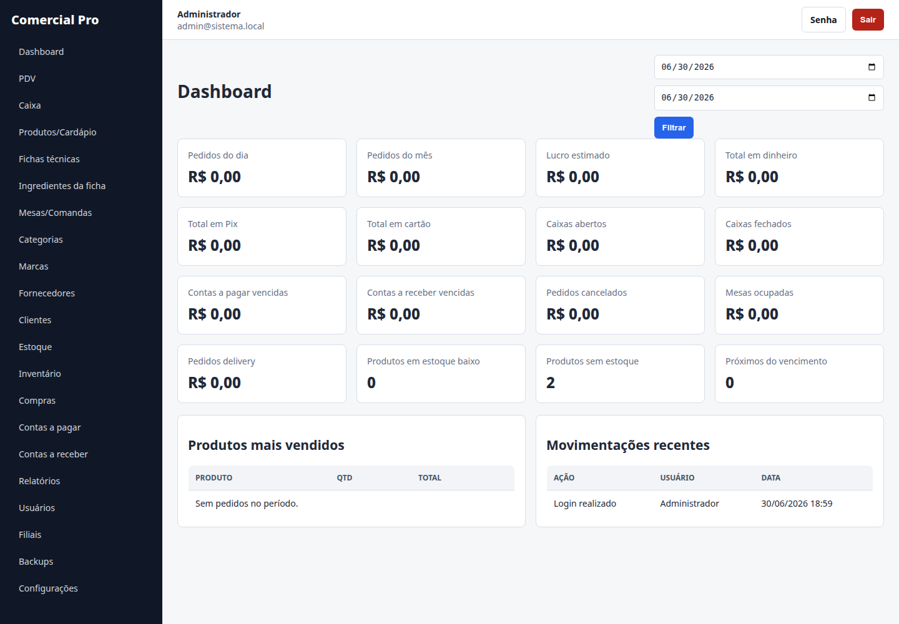
O sistema usa um cadastro central para produtos, cardápio e ingredientes. No campo Tipo de produto, escolha entre produto de revenda, ingrediente, prato pronto, bebida, combo ou adicional.
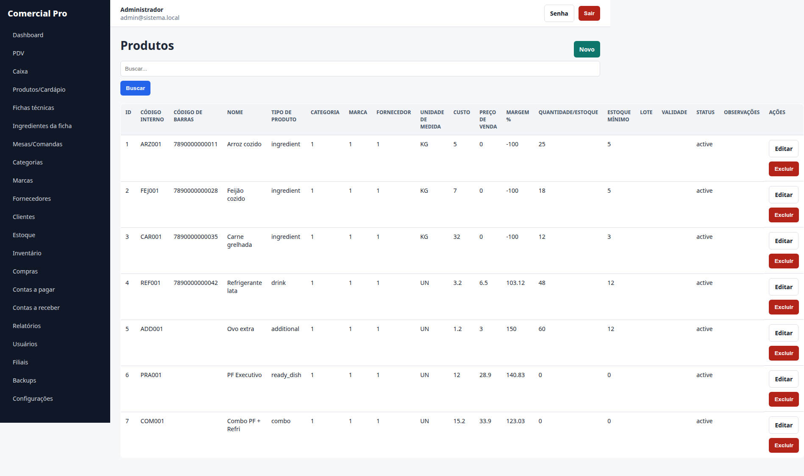
Cadastre a ficha técnica para pratos e combos. A ficha define quais insumos serão baixados quando o item for vendido.
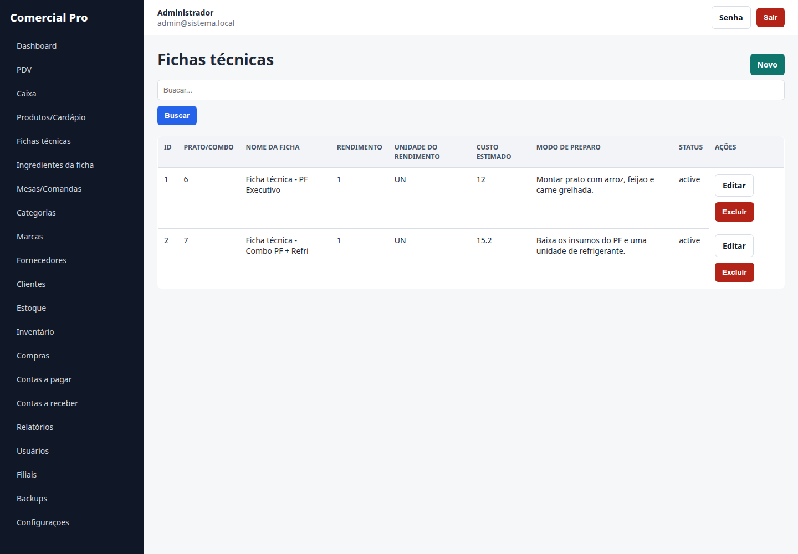
Em "Ingredientes da ficha", informe o insumo, quantidade e unidade. Exemplo: PF Executivo usa arroz, feijão e carne.
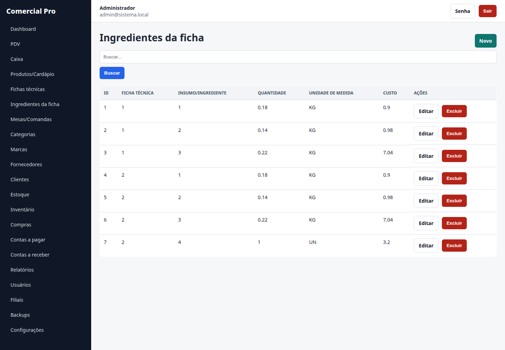
Cadastre mesas do salão. Um pedido do tipo mesa pode usar uma comanda, ocupar a mesa e depois liberar a mesa no cancelamento ou fechamento do fluxo.
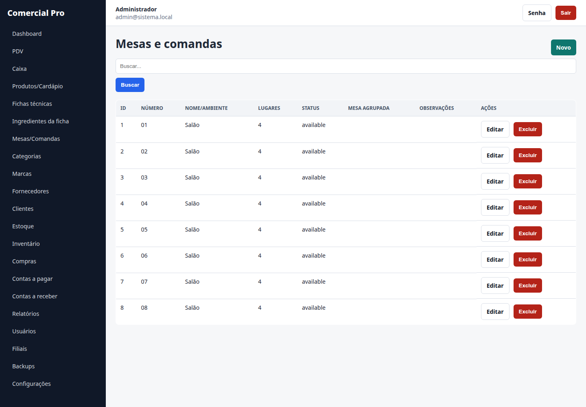
O cadastro de clientes também atende delivery. Use endereço, referência, taxa de entrega padrão e observações de entrega no mesmo registro, sem duplicidade de tabela.
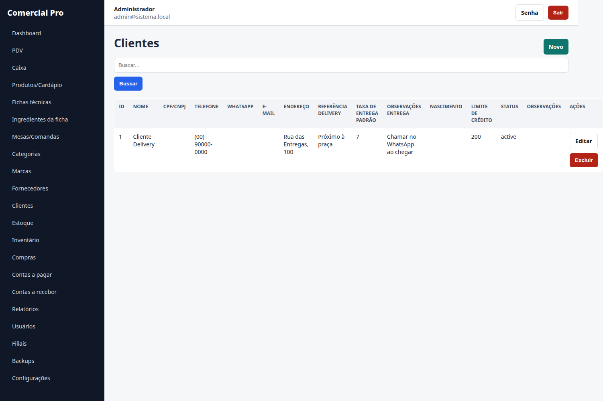
Antes de registrar pagamento, abra um caixa com o valor inicial. O sistema impede operação de pagamento sem caixa aberto.
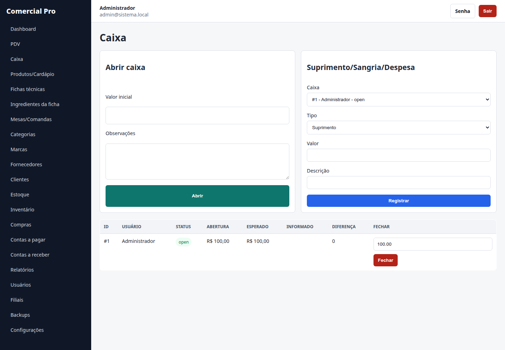
No PDV, escolha o tipo de pedido: balcão, mesa, delivery ou retirada. Depois selecione cliente, mesa/comanda quando necessário, itens do cardápio, descontos e forma de pagamento.
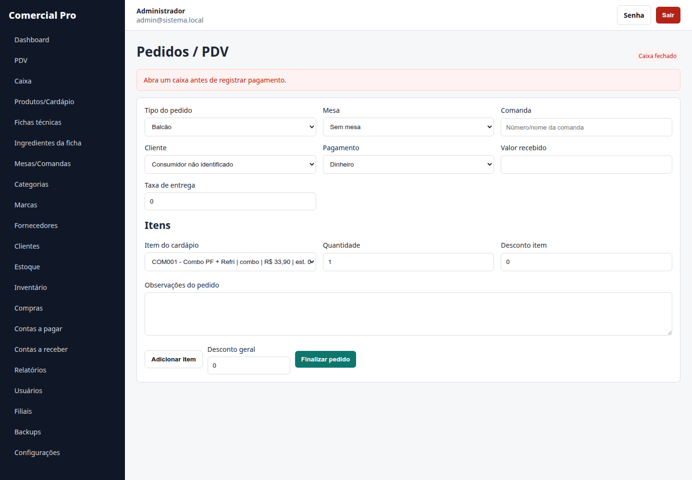
Após finalizar, o sistema gera o comprovante. Para cancelar, informe uma justificativa. O cancelamento reverte estoque, pagamentos, contas a receber, caixa e registra auditoria.
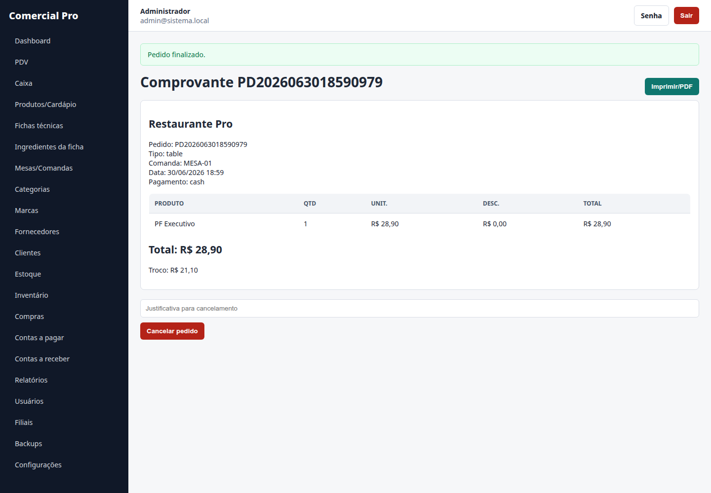
O estoque reúne ingredientes, bebidas, adicionais e produtos de revenda. Toda movimentação registra produto, quantidade anterior, quantidade movimentada, quantidade final, tipo, usuário, data e motivo.
Use ajustes para perdas, avarias, inventário, transferência e correções autorizadas.
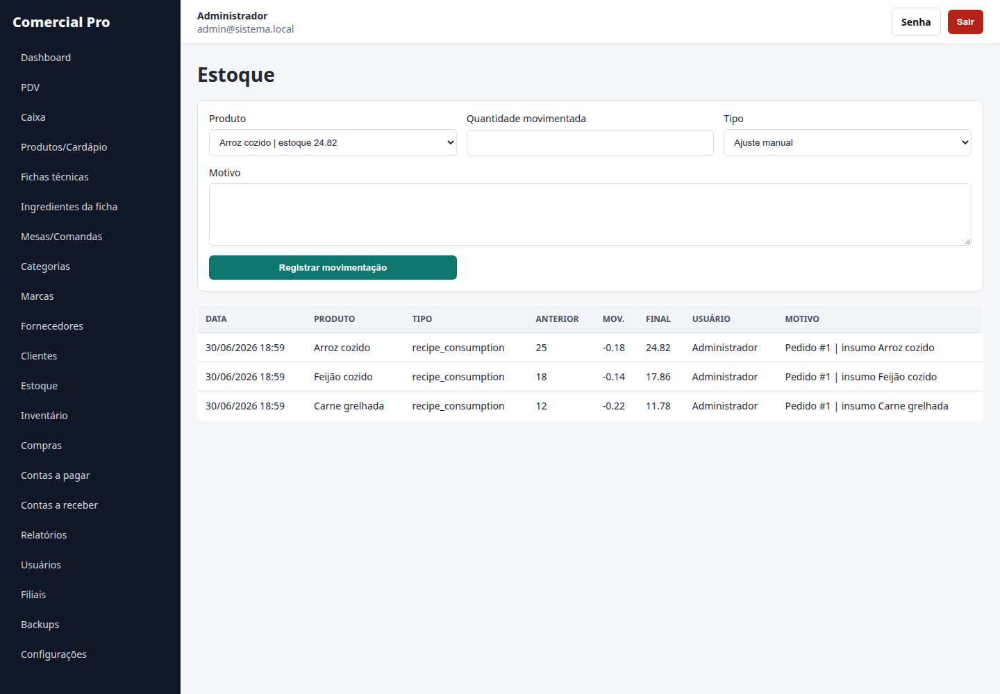
Ao registrar uma compra, os itens entram automaticamente no estoque. Compras parceladas podem gerar contas a pagar.
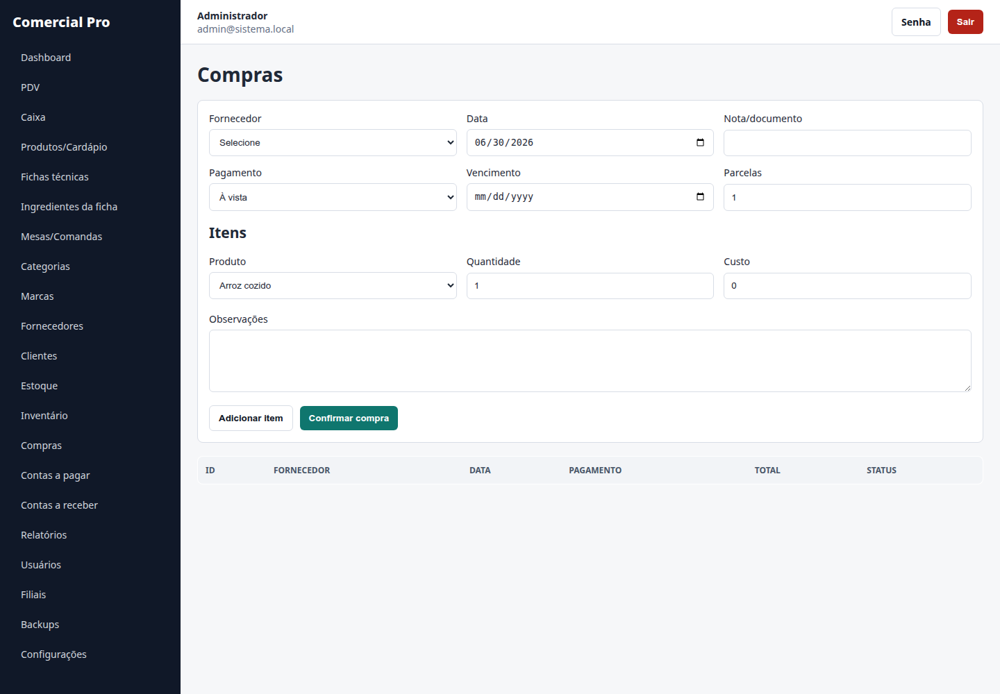
Use filtros por período, tipo de pedido, mesa e usuário/garçom. É possível exportar CSV e imprimir em PDF pelo navegador.
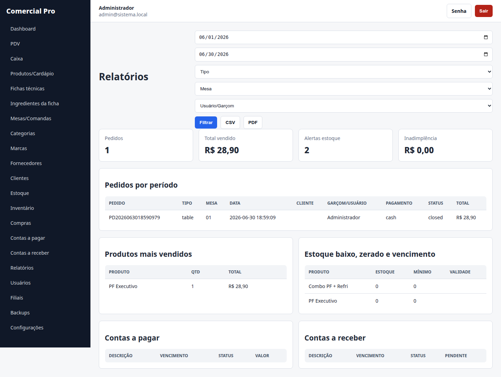
Configure dados da empresa, mensagem do comprovante, política de pedido sem estoque, estoque mínimo padrão, alerta de validade, moeda, impressão e backup automático.
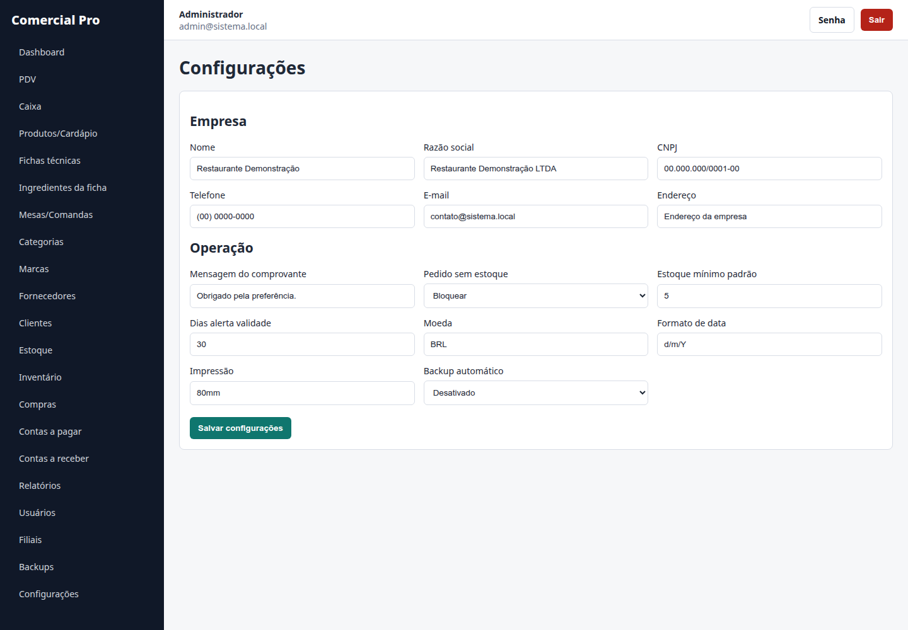
| Rotina | Recomendação |
|---|---|
| Início do dia | Abrir caixa e conferir estoque crítico. |
| Durante atendimento | Registrar pedidos sempre pelo PDV e manter comandas identificadas. |
| Compras | Lançar compras no mesmo dia para manter custo e estoque atualizados. |
| Cancelamentos | Exigir justificativa real para manter auditoria confiável. |
| Fim do dia | Fechar caixa, conferir diferenças e gerar relatório. |
| Segurança | Trocar a senha inicial e criar usuários por perfil. |